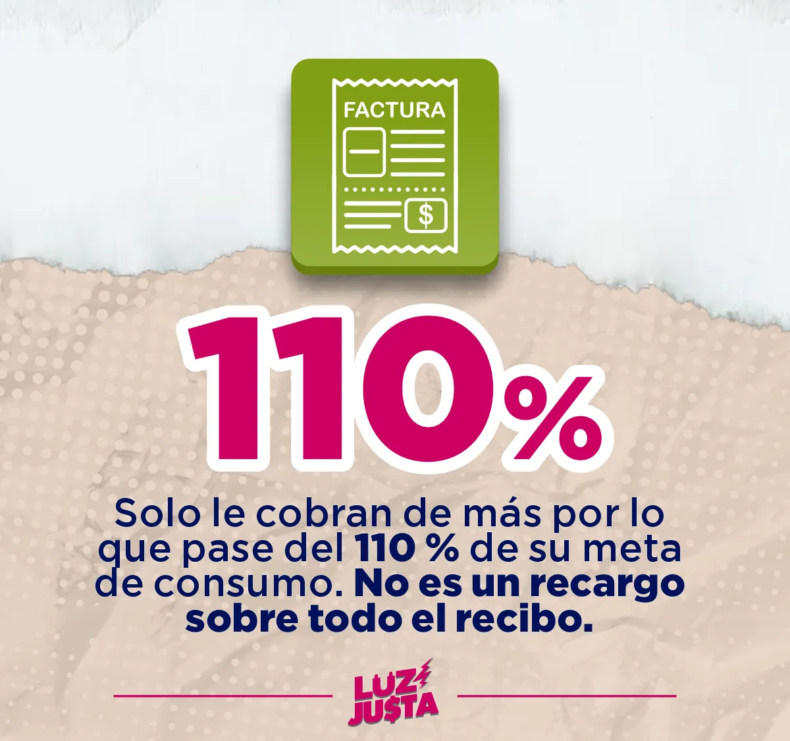
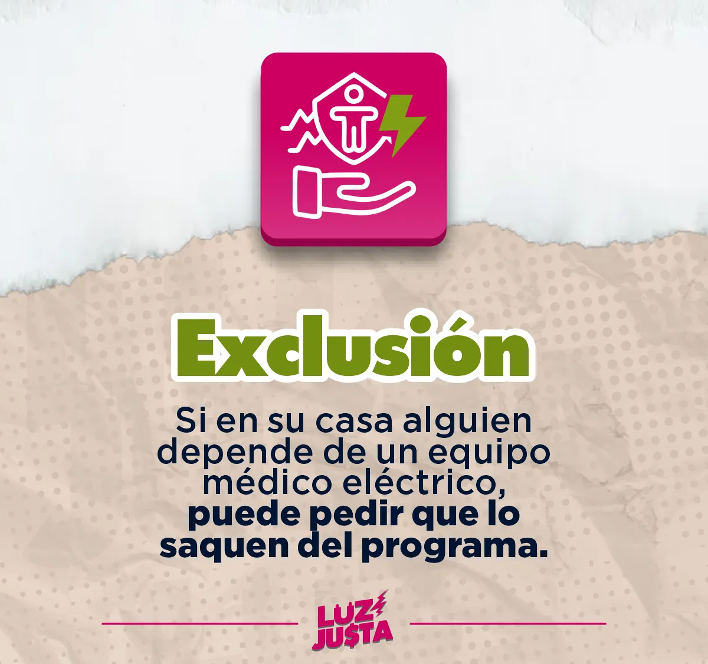

Luz Justa: energía justa en el Magdalena Medio. Facturas, derechos y control político.
Con el Plan «Energía YA» del Gobierno Nacional le van a cobrar más si supera una «meta de consumo» arbitraria que no entiende la realidad del Magdalena Medio. Aquí revisa su recibo, reclama y ahorra sin pasar calor.
Tenga su recibo de la luz a la mano.
Lo que puede hacer en esta aplicación
Cómo funciona
- Tome su reciboy, si es de ESSA, su número de cuenta.
- Revise su metaLe decimos si le toca cobro adicional.
- RepórtenosloCon sus casos hacemos control político en el Senado.
Lo que tiene que saber

Dónde lo dice la norma
«El consumo facturado del ciclo que supere la meta individual del ciclo de lectura, pero no exceda el ciento diez por ciento (110%) de la misma no generará cobro adicional.» Res. CREG 101 120 de 2026, artículo 10.
Dónde lo dice la norma
«El no pago del cobro adicional no dará lugar a la suspensión del servicio público domiciliario de energía eléctrica.» Res. CREG 101 120 de 2026, artículo 20, numeral i).
Dónde lo dice la norma
«Si en este primer ciclo pedagógico resulta un valor de cobro adicional para el usuario por consumo excedente frente a su meta individual, tal cobro tendrá únicamente fines informativos y no constituirá un saldo a pagar por el usuario.» Res. CREG 101 126 de 2026, artículo 5, inciso 2.

Dónde lo dice la norma
«Los usuarios que acrediten una condición médica que requiera el uso permanente o intensivo de equipos eléctricos indispensables para la preservación de la vida o la salud podrán solicitar no ser incluidos en el programa ante el comercializador, aportando el soporte médico que acredite tal condición y la fecha desde la cual se presenta.» Res. CREG 101 120 de 2026, artículo 4, parágrafo 1.
Textos tomados del Gestor Normativo de la CREG, consultado el 21 de octubre de 2026.
Ahorre sin pasar calor
Marque sus aparatos: le decimos cuánto gastan y qué hacer, empezando por lo que no cuesta nada.
Lo que poca gente sabe
- La nevera necesita aire. Déjela separada unos 10 cm de la pared, lejos de la estufa y del sol. Pegada a la pared o al calor, el motor trabaja más tiempo.
- Pruebe el empaque de la nevera. Cierre la puerta sobre una hoja de papel: si sale sin resistencia, el caucho no sella y se escapa el frío todo el día.
- No ponga la nevera en el frío máximo. El punto medio basta para conservar la comida. Y si el congelador tiene escarcha gruesa, descongélelo: el hielo hace que gaste más.
- Limpie el filtro del aire acondicionado cada dos a cuatro semanas: se saca, se lava con agua y se deja secar. Sucio, enfría menos y gasta más.
- Aire en 24 °C y ventilador al tiempo. Cada grado más frío lo hace trabajar más. El ventilador reparte el fresco y deja subir el termostato sin pasar calor.
- La unidad de afuera del aire, a la sombra y sin matas, cajas o ropa encima. Si le da el sol de la tarde o no respira, el equipo se esfuerza más.
- Lo apagado también consume. Televisor, decodificador, equipo de sonido y cargadores enchufados gastan en «espera». Una multitoma con interruptor los apaga de un solo clic.
- Haga la prueba del medidor. Apague y desenchufe todo (también la nevera, solo unos minutos) y mire el medidor: si sigue girando o parpadeando, puede haber una fuga o un daño en la instalación. Pida revisión a la empresa.
- Anote la lectura del medidor el día que pasa el lector y compárela con la del recibo. Si el recibo dice «estimado» o «promedio», no le leyeron el medidor: puede reclamar.
- Si la bomba de agua se prende sola, hay una fuga en el tanque, el flotador o la tubería. Arreglarla ahorra agua y luz.
- Plancha y lavadora, en una sola tanda. La plancha gasta mucho mientras se calienta; mejor planchar todo de una vez. La lavadora, con carga completa y agua fría.
- Cierre cortinas del lado del sol de la tarde y abra ventanas en la noche y la madrugada, cuando refresca. La casa se calienta menos y el aire o el ventilador trabajan menos.
Consejos generales de uso eficiente. Lo que ahorre cada uno depende del aparato y de cuánto lo use; abajo puede calcular su caso.
Calcule usted mismo un aparato
¿Cuánto gasta un aparato?
kWh = vatios × horas al día × días × cantidad × parte del tiempo que trabaja ÷ 1.000
¿Cuánto cuesta esa energía?
Costo = kWh × valor del kWh
Estos cálculos son aproximados. No reemplazan el cálculo oficial de la empresa ni dan el total del recibo, que incluye subsidios o contribuciones, cargo fijo y otros cobros.
Revise y repórtenos su factura
Llene una sola vez: le decimos si le cobran de más y, si quiere, nos envía su caso.
Conozca la «meta» que el plan del Gobierno Nacional le fijó a su hogar o su comercio
Escriba el número de cuenta de su recibo de ESSA (arriba a la derecha). Traemos su meta, su consumo y su cobro. No guardamos el número.
¿No es de ESSA o prefiere no hacerlo? Siga al paso 2 y escriba los datos de su recibo. También puede ver su meta en la página de ESSA.
Ver el estado de mi reporte o borrarlo
Repórtenos su factura
Haremos control político con su caso desde el Senado.
Con sus casos podremos hacer control político desde el Senado. Es voluntario y no es un reclamo ante la empresa de energía: para reclamar, use la pestaña «Reclamar».
Este registro es interno y lo administra el equipo de la Senadora Laura Ahumada. No escriba nombre, cédula, dirección ni número de cuenta.
Reclamar
Su carta de reclamo redactada en PDF y los pasos para radicarla.
Su carta de reclamo, lista para radicar
Si ya revisó su factura, la carta se llena sola con esos datos. Si no, escriba aquí lo básico. Le entregamos la carta redactada, en PDF. Su nombre y su cuenta solo quedan en la carta: no se envían a nadie.
Entréguela en una oficina de ESSA, por su página o por correo, y pida el número de radicado.
Cómo radicar su reclamo, paso a paso
Cargando…